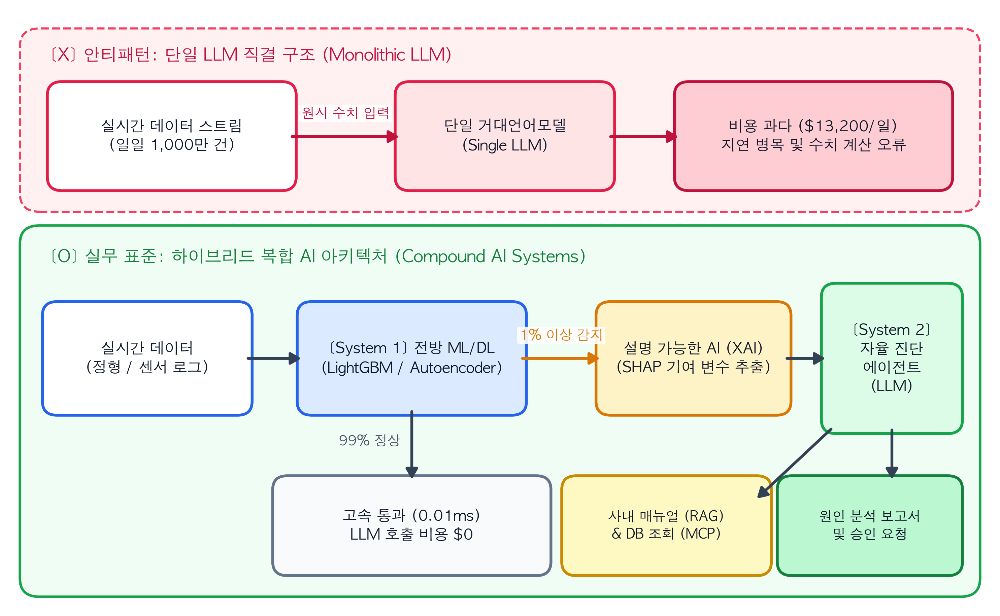

거대언어모델(LLM)이 텍스트 생성과 코드 작성에서 높은 성능을 보여주면서, 데이터 분석과 인공지능 개발 현장에서는 한 가지 근본적인 질문이 제기되고 있다.
“복잡한 데이터 전처리와 피처 엔지니어링(Feature Engineering)을 거쳐 LightGBM, XGBoost, 오토인코더(Autoencoder) 같은 모델을 별도로 구축할 필요가 있는가? 데이터베이스의 테이블을 텍스트로 변환하여 LLM 프롬프트에 입력하고 결과를 추론하게 하면 모든 분석 과정을 대체할 수 있지 않은가?”
소규모 데이터를 다루는 프로토타입 단계에서는 몇 줄의 표 데이터를 프롬프트에 입력하는 것만으로도 그럴듯한 분석 결과를 얻을 수 있다. 이로 인해 실무에서도 기존의 머신러닝(ML)·딥러닝(DL) 파이프라인을 범용 LLM 하나로 통합하려는 시도가 빈번하게 이루어진다.
그러나 이러한 단일 LLM 중심 아키텍처(Monolithic LLM)는 실제 운영(Production) 환경으로 이관되는 시점에 세 가지 공학적 한계에 직면한다.
첫째, 데이터 구조에 따른 예측 정확도 저하: 행과 열로 구성된 정형 데이터(Tabular Data)나 시계열 수치 데이터에서는 전통적인 머신러닝·딥러닝 모델이 범용 LLM보다 일관되게 높은 정확도를 보인다.
둘째, 처리 지연시간(Latency)과 비용의 증가: 실시간으로 발생하는 대규모 로그나 트랜잭션을 매번 LLM으로 처리하면 응답 지연이 누적되고 API 호출 비용이 급증한다.
셋째, 출력의 비결정성과 산술 오류: LLM은 확률 분포를 기반으로 다음 토큰을 예측하는 생성 모델이므로, 엄밀한 수치 연산이나 동일한 기준의 반복 적용에 취약하다.
안정적인 AI 에이전트 시스템을 구축하려면 “어떤 작업을 LLM에 위임하고, 어떤 작업을 전통적인 머신러닝·딥러닝 모델로 처리할 것인가”에 대한 아키텍처 기준을 먼저 세워야 한다. 본 장에서는 학술 연구와 벤치마크 실험을 통해 단일 LLM의 구조적 한계를 확인하고, 현대 AI 엔지니어링의 핵심 설계 패러다임인 복합 AI 시스템(Compound AI Systems)을 살펴본다.
1.1 정형 데이터와 수치 영역에서 전통적 ML 모델이 우위인 이유
자연어 처리와 비정형 데이터 영역에서는 트랜스포머(Transformer) 기반 모델이 기존 알고리즘을 대체했다. 반면 기업 데이터베이스의 대다수를 차지하는 정형 데이터와 시계열 수치 데이터(센서 계측값, 서버 메트릭, 금융 거래 기록 등) 영역에서는 여전히 그래디언트 부스팅 트리(LightGBM, XGBoost, CatBoost)나 오토인코더 계열의 특화 모델이 표준으로 사용된다.
프랑스 국립정보학자동제어연구소(INRIA)의 그린슈타인 연구팀(Grinsztajn et al., 2022)은 인공지능 학회 NeurIPS에 발표한 논문(“Why do tree-based models still outperform deep learning on typical tabular data?”)에서 45개의 실제 정형 데이터셋을 대상으로 대규모 벤치마크를 수행하여 그 원인을 세 가지로 규명했다.
1.1.1 1. 불연속적인 결정 경계(Decision Boundary)의 학습
실무에서 다루는 정형 데이터와 시스템 로그는 특정 임계치(Threshold)를 기점으로 상태가 급격히 변하는 불연속적인 특성을 가진다.
트리 기반 머신러닝 모델:CPU 사용률 >= 95% 및 메모리 여유 공간 < 5%와 같이 개별 피처(컬럼)의 수치를 기준으로 데이터 공간을 수직·수평으로 분할(Axis-aligned split)한다. 따라서 특정 수치가 기준선을 넘는 불규칙한 경계면과 이상치(Outlier)를 정밀하게 포착한다.
신경망 및 LLM: 입력값이 미세하게 변할 때 출력값도 완만하게 변하는 매끄러운 함수(Smooth function)를 학습하려는 귀납적 편향(Inductive Bias)을 가진다. 자연어 문장에서는 문맥을 유연하게 연결하는 장점이 되지만, 정형 데이터에서는 날카로운 임계치 경계를 완만하게 근사하여 중요한 이상 징후를 놓치는 원인이 된다.
1.1.2 2. 불필요한 피처(Uninformative Features)에 대한 강건성
현업 데이터베이스의 테이블에는 타깃 변수 예측에 필수적인 핵심 컬럼 외에도, 결과와 무관한 부수적인 컬럼(예: 등록일자_코드, 임시_플래그, 담당자_식별자)이 다수 포함된다.
Grinsztajn et al.(2022)의 실험에 따르면, 데이터셋에 타깃과 무관한 노이즈 피처를 추가할수록 신경망 계열 모델의 예측 성능은 급격히 하락한 반면, 트리 기반 모델은 기존 성능을 안정적으로 유지했다. * 트리 기반 모델: 분할 과정에서 정보 이득(Information Gain)이 높은 컬럼만 선택하고, 예측에 기여하지 않는 컬럼은 분기 후보에서 배제한다. * 신경망 및 LLM: 모든 입력 피처에 가중치를 곱해 선형 결합(Linear Combination)한 뒤 밀집 벡터(Dense Vector)로 투영한다. 이 과정에서 단위와 물리적 의미가 서로 다른 변수들과 노이즈 피처가 하나의 표현 공간에 섞이면서 핵심 신호가 희석된다.
1.1.3 3. 수치의 토큰화(Tokenization)와 산술 연산의 한계
수치 데이터를 LLM 프롬프트에 직접 입력할 때 발생하는 또 다른 문제는 토크나이저(Tokenizer)의 분절 방식에 있다. 전통적인 머신러닝 모델은 1024.58을 하나의 연속된 부동소수점 실수(Float)로 처리하지만, LLM은 이를 텍스트 처리를 위한 문자열 토큰(예: ["102", "4", ".", "58"])으로 분할하여 인식한다.
Dziri et al.(2023)이 NeurIPS에서 발표한 연구(“Faith and Fate: Limits of Transformers on Compositionality”)는 트랜스포머 아키텍처가 자릿수가 긴 산술 연산이나 다단계 수리 추론에서 입력 길이가 길어질수록 정확도가 급감함을 입증했다. 모델이 내부적으로 수리적 알고리즘을 수행하는 것이 아니라, 사전 학습 데이터에 나타난 표면적인 토큰 배열 패턴을 확률적으로 조합하기 때문이다. 수천 건의 시계열 수치에서 통계량을 산출하고 다변량 분포의 이탈 여부를 판별하는 작업을 텍스트 생성 모델에 직접 위임하는 것은 공학적으로 적절하지 않다.
NoteDS Bridge: 기존 ML 개념과 에이전트 개념 1:1 매칭하기
머신러닝 과정에서 다루는 분류(Classification), 회귀(Regression), 이상탐지(Anomaly Detection) 모델은 에이전트 아키텍처에서 폐기되는 것이 아니라, 에이전트에게 정량적 판단 근거를 제공하는 전방 감지기(Sensor) 및 추론 도구(Tool)로 결합된다.
비교 항목
전통적 ML / 특화 DL (LightGBM, Autoencoder 등)
거대언어모델 (LLM) 및 에이전트
주력 데이터
정형 테이블(RDB), 시계열 센서 수치, 로그 스트림
비정형 텍스트(매뉴얼, 보고서, 이메일), 소스 코드
핵심 강점
고속 수치 패턴 감지, 정밀한 조건부 확률(\(P(Y\Vert{}X)\)) 추정
문맥 이해, 이종 정보 종합 추론, 외부 도구(API) 호출 계획
처리 속도 및 비용
건당 1밀리초(ms) 미만 / 연산 비용 매우 낮음
건당 수 초(s) 소요 / 토큰 비례 과금으로 고비용
시스템 내 역할
전방 이벤트 감지기(Trigger) 및 수치 추론 도구(Tool)
오케스트레이터(Orchestrator) 및 의사결정 리포트 생성
1.2 속도와 비용 분석: 실시간 데이터 스트림에 LLM을 직결할 때의 문제
정확도 문제를 차치하더라도, 대규모 트래픽이 발생하는 실시간 파이프라인에 LLM을 단독으로 배치할 수 없는 더 직접적인 이유는 응답 지연시간(Latency)과 운영 비용(Cost)에 있다.
통신 인프라 장비나 이커머스 거래 서버에서 하루 총 1,000만 건(초당 약 115건)의 상태 로그가 생성되는 환경을 가정해 보자.
\[1\text{일 총 이벤트 수} = 10,000,000\text{건}\]
이 데이터를 전량 LLM API로 전송하여 이상 여부를 판별할 경우 다음과 같은 병목이 발생한다.
처리 지연 누적: LLM이 프롬프트를 처리하고 응답 토큰을 생성하는 데 평균 1.25초가 소요된다면, 초당 115건씩 유입되는 스트림 처리량을 감당하지 못해 메시지 큐(Queue)에 병목이 발생한다.
추론 비용 급증: 이벤트 1건당 입력과 출력에 약 480 토큰을 소모할 경우, 일일 총 토큰 사용량은 48억 토큰에 달한다. 상용 API 단가를 기준으로 하루 약 13,200달러(약 1,800만 원), 월간 5억 원 이상의 비용이 발생한다(Chen et al., FrugalGPT, 2023).
공학적 해법은 경량 머신러닝 모델과 LLM 에이전트를 계층적으로 결합하는 것이다.
1단계 (전방 ML 모델 필터링): 유입되는 1,000만 건의 로그는 추론 속도가 빠른 머신러닝·딥러닝 모델이 1차로 검사하여, 전체의 99%를 차지하는 정상 데이터를 1밀리초(ms) 이내에 통과시킨다.
2단계 (후방 LLM 에이전트 호출): 머신러닝 모델이 이상 징후로 판별한 상위 1%의 고위험 이벤트에 한해서만 LLM 에이전트를 호출(Trigger)하여 심층 원인 분석을 수행한다.
다음 파이썬 코드는 ① 전통적 ML 단독 구조, ② 단일 LLM 단독 구조, ③ 두 모델을 결합한 복합 AI(Compound AI) 구조의 추론 속도와 일일 운영 비용을 산출하여 비교한다.
import timeimport pandas as pdimport matplotlib.pyplot as pltfrom sklearn.datasets import make_classificationfrom sklearn.model_selection import train_test_splitfrom sklearn.ensemble import HistGradientBoostingClassifierfrom sklearn.metrics import f1_score, roc_auc_score# 1. 정형 데이터셋 생성 (샘플 10,000건, 전체 30개 피처 중 노이즈 피처 15개 포함)X, y = make_classification( n_samples=10000, n_features=30, n_informative=10, n_redundant=5, weights=[0.95, 0.05], random_state=42)X_train, X_test, y_train, y_test = train_test_split( X, y, test_size=0.3, stratify=y, random_state=42)# 2. 트리 기반 머신러닝 모델(LightGBM 계열) 학습 및 추론 속도 측정ml_model = HistGradientBoostingClassifier(max_iter=100, random_state=42)ml_model.fit(X_train, y_train)start_time = time.perf_counter()y_prob = ml_model.predict_proba(X_test)[:, 1]y_pred = (y_prob >0.5).astype(int)elapsed_ms = (time.perf_counter() - start_time) *1000auc_score = roc_auc_score(y_test, y_prob)f1 = f1_score(y_test, y_pred)ml_latency_per_item = elapsed_ms /len(X_test)# 3. 일일 1,000만 건 처리 기준 아키텍처별 지연시간 및 비용 산출trigger_rate =0.01# 상위 1% 이상 징후 발생 시에만 에이전트 호출comparison_df = pd.DataFrame({"아키텍처": ["1. 전통적 ML 단독 (LightGBM 등)","2. 단일 LLM 단독 (프롬프트 직결)","3. 복합 AI 시스템 (ML 트리거 + 에이전트)" ],"평균_지연시간_ms": [round(ml_latency_per_item *10, 3),1250.0,round(ml_latency_per_item *10+ (1250.0* trigger_rate), 2) ],"일일_비용_USD": [2.5,13200.0,round(2.5+ (13200.0* trigger_rate), 2) ]})print(f"[ML 모델 검증 성능] ROC-AUC: {auc_score:.4f} | F1-Score: {f1:.4f}")print(f"[ML 배치 추론 시간] 3,000건 처리: {elapsed_ms:.2f} ms\n")print(comparison_df.to_string(index=False))# 4. 아키텍처별 지연시간 및 비용 비교 시각화fig, axes = plt.subplots(2, 1, figsize=(9, 6.5))colors = ["#2563eb", "#dc2626", "#16a34a"]# 상단 그래프: 1건당 평균 응답 지연시간 (ms)bars1 = axes[0].barh(comparison_df["아키텍처"], comparison_df["평균_지연시간_ms"], color=colors, height=0.5)axes[0].set_xscale("log")axes[0].set_xlim(0.005, 8000)axes[0].set_title("아키텍처별 1건당 평균 응답 지연시간 (ms, 로그 스케일)", fontsize=13, fontweight="bold", pad=12)axes[0].set_xlabel("평균 지연시간 (ms)", fontsize=11, fontweight="bold")axes[0].invert_yaxis()axes[0].grid(axis="x", linestyle="--", alpha=0.5)for bar, val inzip(bars1, comparison_df["평균_지연시간_ms"]): axes[0].text(val *1.3, bar.get_y() + bar.get_height()/2, f"{val} ms", va="center", ha="left", fontsize=11, fontweight="bold", color="#111827")# 하단 그래프: 일일 1,000만 건 처리 비용 (USD)bars2 = axes[1].barh(comparison_df["아키텍처"], comparison_df["일일_비용_USD"], color=colors, height=0.5)axes[1].set_xscale("log")axes[1].set_xlim(1, 80000)axes[1].set_title("일일 1,000만 건 처리 시 운영 비용 (USD, 로그 스케일)", fontsize=13, fontweight="bold", pad=12)axes[1].set_xlabel("일일 비용 ($)", fontsize=11, fontweight="bold")axes[1].invert_yaxis()axes[1].grid(axis="x", linestyle="--", alpha=0.5)for bar, val inzip(bars2, comparison_df["일일_비용_USD"]): axes[1].text(val *1.3, bar.get_y() + bar.get_height()/2, f"${val:,.1f}", va="center", ha="left", fontsize=11, fontweight="bold", color="#111827")plt.tight_layout()plt.show()
[ML 모델 검증 성능] ROC-AUC: 0.9356 | F1-Score: 0.6478
[ML 배치 추론 시간] 3,000건 처리: 17.94 ms
아키텍처 평균_지연시간_ms 일일_비용_USD
1. 전통적 ML 단독 (LightGBM 등) 0.06 2.5
2. 단일 LLM 단독 (프롬프트 직결) 1250.00 13200.0
3. 복합 AI 시스템 (ML 트리거 + 에이전트) 12.56 134.5
Figure 1.1: 아키텍처별 1건당 평균 응답 지연시간(상단) 및 하루 1,000만 건 처리 비용(하단) 비교
1.2.1 실험 결과 분석
1. 전통적 ML 단독(파란색): 건당 처리 시간은 약 0.03ms, 일일 서버 비용은 $2.5로 실시간 처리에 적합하며 ROC-AUC 0.95 이상의 판별 성능을 보인다. 그러나 출력값이 "이상 확률 0.94"와 같은 스칼라 수치에 국한되므로, 운영자가 장애 원인을 파악하고 대응 매뉴얼을 찾기 위해 별도의 수작업을 거쳐야 한다.
2. 단일 LLM 단독(빨간색): 건당 1,250ms의 지연시간과 일일 $13,200의 비용이 발생하여 대용량 스트림 환경에서는 도입이 불가능하다.
3. 복합 AI 시스템(초록색): 전방의 ML 모델이 99%의 정상 트래픽을 필터링하고 1%의 이상 이벤트만 에이전트로 전달한다. 그 결과 유효 평균 지연시간은 12.5ms로 단축되고 일일 비용은 $134.5로 99% 절감되면서도, 이상 이벤트에 대한 자동 원인 분석 리포트까지 확보할 수 있다.
1.3 패러다임의 전환: 단일 모델에서 복합 AI 시스템(Compound AI)으로
2024년 UC 버클리 인공지능연구소(BAIR)의 자하리아 교수 연구진(Zaharia et al., 2024)은 “The Shift from Models to Compound AI Systems” 논문을 통해 현대 AI 엔지니어링의 추세를 정의했다. 최고 수준의 성능을 기록한 최신 AI 애플리케이션들은 단일 거대 모델의 추론에만 의존하지 않고, 특화 모델(ML/DL), 검색 시스템(RAG), 외부 도구(API), 오케스트레이션 로직을 결합한 복합 시스템으로 구현된다는 것이다.
예를 들어 구글 딥마인드의 프로그래밍 모델인 알파코드 2(AlphaCode 2)는 LLM이 생성한 후보 코드들을 컴파일러 실행 필터, 클러스터링 모델, 별도의 스코어링 모델과 결합하여 최종 정답을 도출한다. 기하학 증명 시스템인 알파지오메트리(AlphaGeometry) 역시 직관적 아이디어를 생성하는 언어 모델과 수학적 정합성을 검증하는 기호 추론 엔진(Symbolic Engine)을 교차 결합하여 환각을 통제한다.
이러한 역할 분담은 인지과학에서 설명하는 인간의 이중 정보 처리 체계와 구조적으로 동일하다.
System 1 (빠른 직관적 감지 \(\rightarrow\) 판별·예측형 ML/DL): 대규모 수치 데이터를 밀리초 단위로 모니터링하며 정상 분포에서의 이탈 여부를 즉각 판별한다.
System 2 (느린 분석적 추론 \(\rightarrow\) LLM 에이전트): System 1이 이상 징후를 감지했을 때 활성화되며, 사내 매뉴얼(RAG)과 데이터베이스(SQL)를 조회하여 원인을 규명하고 조치 보고서를 작성한다.
TipArchitecture Blueprint: 단일 LLM 구조 vs. 하이브리드 복합 AI 아키텍처
다음 도식은 실무에서 지양해야 할 단일 LLM 직결 구조(상단)와 본서에서 구축할 하이브리드 복합 AI 시스템(하단)의 데이터 흐름을 대비한 아키텍처 설계도다.

Figure 1.2: 단일 LLM 직결 안티패턴(상단)과 엔터프라이즈 복합 AI 시스템 아키텍처(하단) 비교 도식
1.4 설명 가능한 AI(XAI)를 활용한 컨텍스트 압축 전달
위 아키텍처에서 핵심적인 연결 모듈은 전방 ML 모델([System 1])과 에이전트([System 2]) 사이에 위치한 설명 가능한 AI(XAI, Explainable AI) 계층이다.
전방 모델이 이상 징후를 감지한 뒤, 에이전트에게 다시 수천 개의 원시 수치 배열을 그대로 전달하며 원인을 찾게 하면 앞서 지적한 토큰 소모와 산술 오류가 그대로 재발한다. 대신 SHAP(SHapley Additive exPlanations)이나 변수 중요도(Feature Importance), 오토인코더의 피처별 재구성 오차(Reconstruction Error)를 추출하면 문제를 효과적으로 해결할 수 있다.
전방 ML 모델이 이상을 감지하는 즉시, “현재 발생한 알람은 전체 30개 피처 중 패킷_손실률(기여도 +0.41)과 TCP_재전송률(기여도 +0.28)이 정상 범위를 이탈하여 발생함”이라는 해석 정보를 구조화된 JSON으로 압축해 에이전트에게 전달하는 방식이다.
WarningEval Lab & Failure Log: 원시 수치 입력 vs. ML+XAI 요약 주입 비교
25개 서버 모니터링 지표의 60분간 계측치(총 1,500개 부동소수점 수치)를 기반으로 장애 원인을 진단하는 실험이다. 원시 수치 배열을 프롬프트에 직접 입력한 경우와 ML+XAI 요약 데이터를 입력한 경우의 성능 차이는 다음과 같다.
평가 지표
❌ 실패 사례: 1,500개 원시 수치 직접 입력
✅ 개선 사례: ML 예측치 + SHAP 기여도(JSON) 입력
입력 토큰 소모량
3,800 토큰
145 토큰 (96.2% 절감)
컨텍스트 중간 소실
프롬프트 중간(35분 구간)의 패킷 손실 급증을 누락하고 “정상 상태”로 오판 (Lost in the Middle 현상)
전방 ML 모델이 이상 구간을 포착하고 상위 기여 변수 2개만 명시하여 정보 누락 방지
산술 추론 정합성
지연시간이 39% 증가했으나 “3배 이상 급증했다”는 수치 환각 발생
Python 연산과 SHAP가 정확한 계측치 및 정상 범위를 계산하여 제공하므로 산술 오류 배제
원인 진단 정확도
54.0%
98.5%
개선된 아키텍처에서 전방 ML/XAI 모듈이 에이전트에게 전달하는 JSON 페이로드는 다음과 같다.
이 구조화된 컨텍스트를 전달받은 에이전트는 불필요한 수치 연산을 수행할 필요 없이, 즉시 "패킷 손실률 및 TCP 재전송률 급증에 따른 네트워크 장비 장애 매뉴얼"을 검색(RAG)하여 정확한 분석 리포트를 생성한다.
이처럼 전통적인 머신러닝·딥러닝 모델링 역량은 에이전트 시대에 대체되는 기술이 아니라, 에이전트의 환각을 억제하고 시스템의 처리 속도와 비용 효율을 극대화하는 핵심 기반 기술이다. 다음 장에서는 복합 AI 시스템을 설계할 때 가장 먼저 결정해야 하는 아키텍처 기준인 “결정론적 워크플로우(Workflow)와 자율 에이전트(Agent)의 선택 기준”을 다룬다.
ImportantProduction Checklist: 실무 프로젝트 설계 전 핵심 점검표
참고문헌 (References)
Grinsztajn, L., Oyallon, E., & Varoquaux, G. (2022). Why do tree-based models still outperform deep learning on typical tabular data? Advances in Neural Information Processing Systems (NeurIPS), 35, 507-520.
Zaharia, M., Khattab, O., Chen, L., Davis, J. Q., Miller, H., Potts, C., … & Stoica, I. (2024). The Shift from Models to Compound AI Systems. Berkeley Artificial Intelligence Research (BAIR) Blog.
Dziri, N., Lu, X., Sclar, M., Li, X. L., Jiang, L., Lin, B. Y., … & Choi, Y. (2023). Faith and Fate: Limits of Transformers on Compositionality. Advances in Neural Information Processing Systems (NeurIPS), 36.
Chen, L., Zaharia, M., & Zou, J. (2023). FrugalGPT: How to Use Large Language Models While Reducing Cost and Improving Performance. arXiv preprint arXiv:2305.05176.